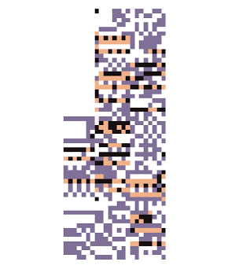

this is Not a 403, this is a page where I tell you all about MissingNo.!!!
MissingNo. (Japanese: ???? Ketsuban, lit. "missing number"), as it is displayed in-game due to the ten-character limit in Western Generation I games, is a dual-type Bird/Normal glitch Pokémon in Pokémon Red and Blue, and a dual-type Normal/randomly named glitch type (which often has '9' in it) glitch Pokémon in Pokémon Yellow. It is arguably the best known glitch Pokémon, closely followed by 'M (00), and it is the easiest glitch Pokémon to find in the localizations. It has five distinct forms, but the most frequent forms (the Red/Blue and Yellow normal forms) share 36 index numbers each. In later generations, other glitch Pokémon are sometimes referred to as "a MissingNo.", such as ??????????, ?, and -----. Despite this, the name "MissingNo." is a misnomer in this case; they have little relation to the one found in Pokémon Red and Blue or Yellow. MissingNo.'s cry is generally the game's equivalent of a "blank" cry: a Nidoran? (base 00)'s cry with a pitch of 0 and no echo. This is because the cries of these Pokémon are undefined in the data structure. A few MissingNo. have different cries (specifically 0x43, 0x45, 0x4F, 0x51, 0x5E, 0x5F, 0x7F, and 0xB5). The fact that these cries are valid and not garbage data (i.e. unrelated data read in the wrong way, as is the case with most of MissingNo.'s properties) supports the view that MissingNo. may have originally been a Pokémon that was deleted from the games. (See this section for further details). The Pokédex entries of MissingNo. and all glitch Pokémon with a Pokédex number of 0 will only appear upon capture if the player has not encountered Cubone, but as with all glitch Pokédex entries, they normally remain inaccessible through the actual Pokédex. An exception to this rule is in Red and Green, where MissingNo. can be "registered" in the Pokédex if the player enables the 'seen' flag for #152 through select glitches and memory corruption. If MissingNo.'s Pokédex data is viewed, Rhydon's cry will be heard, followed by MissingNo.'s (blank) entry and a series of glitchy sounds. No MissingNo. can evolve or learn any moves through leveling up. If the RB MissingNo. is traded to Generation II, it will hold a Carbos.
